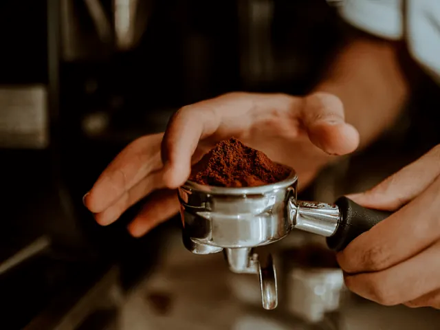
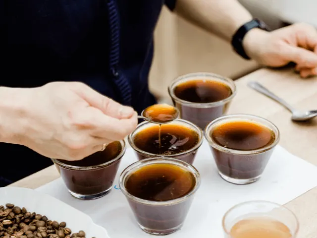

Barista Training in Nijmegen: Word Koffie Expert
Gepubliceerd op 29 november 2023, bijgewerkt op 26 maart 2024
Onderdeel van de gids Cursussen in Nijmegen

Welkom in de Wereld van Espresso en Latte Art
Nijmegen, een stad rijk aan geschiedenis en cultuur, biedt nu de unieke kans om de geheimen van koffie te ontdekken met de barista cursussen die je kan volgen bij één van de barista’s. Of je nu een beginnende koffie-enthousiast bent of je koffievaardigheden naar een hoger niveau wilt tillen, door het volgen van een barista training in Nijmegen zal dit de perfecte plek zijn om te starten.
Professionele Begeleiding en Praktijkgerichte Lessen
Onder begeleiding van ervaren barista’s leer je alles over verschillende koffiesoorten, de kunst van het espresso zetten en de technieken voor het maken van de perfecte schuimlaag voor cappuccino’s en lattes. De trainingen bieden een balans tussen theorie en praktijk, waardoor je niet alleen kennis opdoet, maar deze ook direct in de praktijk brengt.
Een Cursus voor Iedere Koffieliefhebber
De barista cursussen in Nijmegen is ontworpen om aan ieders behoeften te voldoen. Van beginners die nog nooit een espressomachine hebben aangeraakt tot gevorderden die hun latte art willen perfectioneren – iedereen is welkom.
Jouw Pad naar Koffie-Expertise
Aan het einde van de cursus heb je niet alleen een diepgaand begrip van koffie en de bereidingswijzen, maar beschik je ook over de vaardigheden om indruk te maken met je barista-kunsten. Of je nu droomt van een carrière als professionele barista of simpelweg je koffie-ervaring thuis wilt verbeteren, Het volgen van een training biedt de kennis en vaardigheden die je nodig hebt.
Begin Jouw Barista Avontuur in Nijmegen
Meld je vandaag nog aan voor onze barista cursus in Nijmegen en begin aan een smaakvol avontuur in de wereld van koffie!
Blommers in Nijmegen
Ontdek Koffiekunst bij Blommers Coffee in Nijmegen
Leer en Geniet met Workshops Bij Blommers Coffee kun je jezelf onderdompelen in de kunst van koffiebereiding. Volg een boeiende ‘Workshop Barista’ voor de basis, of perfectioneer je vaardigheden in ‘Workshop Latte Art’.
Koffiekennis in Boeken Verrijk je koffiekennis met de inspirerende boekencollectie van Blommers, een bron van informatie voor elke koffieliefhebber.
Alles voor Jouw Koffiebeleving Van kwaliteitskoffiebonen tot professionele espresso- en brewing tools, Blommers’ webshop biedt alles wat je nodig hebt. Ze bedienen zowel particuliere koffiegenieters als zakelijke klanten.
Jouw Partner in Koffie Voor bedrijven biedt Blommers Coffee uitstekende B2B-oplossingen, van leveringen tot apparatuur.
Beleef de wereld van koffie bij Blommers in Nijmegen – een reis van smaak, kennis en vakmanschap.

Ontdek Koffieperfectie met Rose van Asten
Bij Rose van Asten, een erkende SCA-geaccrediteerde trainer, kun je je passie voor koffie verdiepen. Of je nu een beginner bent of je vaardigheden wilt aanscherpen, Rose biedt een scala aan mogelijkheden. Kies uit diverse SCA-trainingen, interactieve workshops, en uitgebreide koffieopleidingen. Haar expertise in consultancy is ook beschikbaar voor degenen die hun koffiebedrijf willen optimaliseren. Duik in de wereld van koffie met Rose van Asten en transformeer je liefde voor koffie in vakmanschap.
Cup of Blackbird
Cup of Blackbird, geleid door SCA Barista Professional Merel van Laar, biedt een unieke koffie-ervaring. Huur een deskundige barista in voor je evenement, leer de kunst van koffiezetten in de Basis Barista workshop, of verfijn je vaardigheden in de Latte Art workshop. Ontdek tijdens de koffieproeverijen de rijke smaken en aroma’s van verschillende koffiesoorten. Cup of Blackbird is de plek waar koffieliefhebbers hun passie kunnen ontwikkelen en delen, met workshops die inzicht geven in alle facetten van koffie.

Conclusie: Barista Training in Nijmegen – Een Reis naar Koffie-Expertise
Nijmegen biedt een fascinerende reis naar de wereld van koffie door een divers aanbod van barista trainingen en workshops. Of je nu nieuw bent in de wereld van koffie of al ervaren bent, deze cursussen bieden een unieke kans om je vaardigheden te verfijnen en dieper in te gaan op de kunst van koffiebereiding.
Van basis espresso technieken tot geavanceerde latte art, elke cursus is ontworpen om je te inspireren en te motiveren, met een perfecte balans tussen theorie en praktijk. Door te trainen met ervaren professionals, zoals Rose van Asten en Merel van Laar van Cup of Blackbird, doe je niet alleen waardevolle kennis op, maar ontwikkel je ook praktische vaardigheden die je koffie-ervaring thuis of professioneel naar een hoger niveau tillen.
Bovendien bieden plaatsen zoals Blommers Coffee in Nijmegen niet alleen workshops en trainingen, maar ook een uitgebreide webshop waar je alles kunt vinden wat je nodig hebt voor je koffiebeleving, van koffiebonen tot professionele apparatuur.
Dus, of je nu droomt van een carrière als barista, of gewoon je ochtendkoffie thuis wilt verbeteren, Nijmegen biedt alle middelen en kennis die je nodig hebt om te slagen in jouw koffie-avontuur. Meld je aan voor een van de barista cursussen en begin je reis naar koffie-expertise in de levendige en historische stad Nijmegen. Klik hier als je op zoek bent naar een andere cursus in Nijmegen.
OVERZICHT Barista’s IN NIJMEGEN
BEKIJKKoffiebars in Nijmegen
Zin om te beginnen? In onze bedrijvengids vind je alle 5 koffiebars in Nijmegen, met openingstijden, kenmerken en een kaart.
Bekijk alle 5 koffiebars in Nijmegen
Heb je zelf een koffiebar? Laat je hier uitlichten.